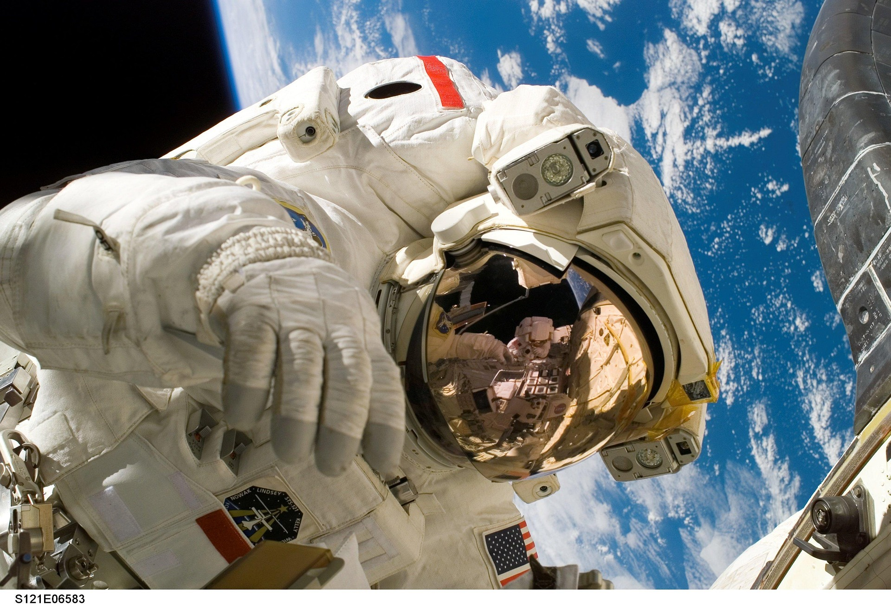

The Space Race
Written by Kaivy ..... 19 January 2025
The Space Race saw intense competition between the United States and the Soviet Union. It started during the Cold War in the late 1950s, when both superpowers sought to establish their superiority in science and technology, and coincided with the Arms Race.
This race was sparked in 1955 when both superpowers aimed to launch “small Earth-circling satellites.” However, the race was exacerbated by the Soviet Union's launch of Sputnik 1 on October 4, 1957, the first artificial satellite. This prompted the United States to establish NASA, on 29 July 1958, and accelerate its space exploration aims.
Communication satellites played an essential role in the space race and helped improve global communications. The launch of Telstar 1 by NASA in 1962 enabled live transmission of broadcast television images between the United States and Europe, allowing people worldwide to connect. The Telstar 1, although no longer in use, remains in Earth orbit. These developments have led to significant societal changes, bringing all facets of the world together.
Weather satellites have also been effective in providing more accurate weather forecasts and improved disaster management. There are 2 types of weather satellites; polar orbiting or geostationary. Satellites like TIROS-1, launched in 1960, the first full-scale weather satellite, and Meteor-1-, launched in 1969, the Soviet Union's first fully operational weather satellite, allowed meteorologists to monitor weather trends and natural disasters more precisely. This information has been crucial in mitigating the impacts of natural disasters and improving agricultural practices.
Navigation satellites, particularly Global Positioning System (GPS) and Global Navigation Satellite System (GLONASS), have revolutionised transportation and logistics. These satellites offer real-time tracking and navigation. This has made it extremely useful in day-to-day life – ranging from being used for drivers on roads to construction to being used by municipals and the military, GPS is deeply utilised in modern society.
Driven by geopolitical conflicts and increasing national pride, the space race has led to many technological breakthroughs. These scientific and technological breakthroughs have long-lasting effects, transforming navigation, weather forecasting, and communication. The Space Race's legacy in the advancement of satellite technology promises to improve global connectivity and foster space exploration.